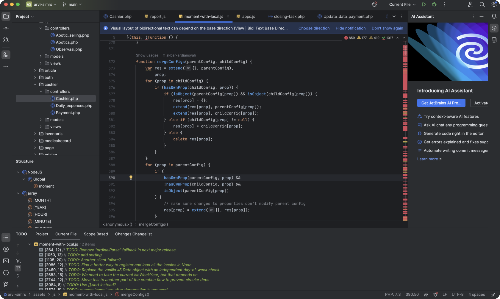

Kembangkan bisnis Anda Bersama kami
Visualisasikan bisnis Anda
menuju transformasi {digital}.

Visualisasikan bisnis Anda
menuju transformasi {digital}.
Bootstrap now supports color modes, or themes, as of v5.3.0. Explore our default light color mode and the new dark mode, or create your own using our styles as your template.
Bisnis Anda layak untuk memiliki wajah digital yang menawan. Tim ahli kami akan merancang dan mengembangkan website yang sesuai dengan kebutuhan unik Anda. Dari desain yang menarik hingga fungsionalitas yang sempurna, kami siap membawa bisnis Anda ke tingkat berikutnya.
Bisnis modern memerlukan kehadiran digital yang kuat, dan itu dimulai dengan memiliki sebuah website profesional yang menarik dan fungsional. Di [Nama Perusahaan], kami memahami betapa pentingnya sebuah website yang efektif dalam mengkomunikasikan merek Anda kepada dunia. Itulah mengapa kami menawarkan layanan pembuatan website profesional yang dikustomisasi sesuai dengan kebutuhan unik dan visi bisnis Anda.

Apakah Anda memiliki ide besar untuk sebuah aplikasi web? Kami akan membantu Anda merealisasikannya.
Dari aplikasi
sederhana hingga proyek yang kompleks, tim {developer} kami akan bekerja sama dengan
Anda dari konsep
hingga peluncuran.
Konsultasi dan Analisis Kebutuhan: Kami memulai dengan memahami kebutuhan dan
tujuan bisnis Anda
secara mendalam. Kami
akan melakukan sesi konsultasi untuk mengidentifikasi fitur dan fungsionalitas yang Anda butuhkan
dalam aplikasi web
Anda.
Perancangan Konseptual: Berdasarkan analisis kebutuhan, tim kami akan membuat
rancangan konseptual
yang mencakup
arsitektur aplikasi, desain antarmuka pengguna (UI), dan pengalaman pengguna (UX). Kami memastikan
desain yang intuitif
dan menarik yang mencerminkan identitas merek Anda.
Pengembangan dan Implementasi:
Setelah desain disetujui, tim pengembang kami akan mulai
mengimplementasikan fitur-fitur
yang dirancang menggunakan teknologi terbaru dan praktik terbaik. Kami berkomitmen untuk
menghasilkan aplikasi yang
cepat, aman, dan dapat diskalakan.
Uji Coba dan Penyesuaian:
Kami melakukan uji coba menyeluruh untuk memastikan bahwa aplikasi
berfungsi dengan baik dan
bebas dari bug. Umpan balik Anda akan sangat berharga dalam tahap ini untuk melakukan penyesuaian
yang diperlukan.
Peluncuran dan Pemeliharaan:
Setelah aplikasi siap, kami akan membantu Anda dalam peluncuran resmi.
Kami juga
menyediakan layanan pemeliharaan dan dukungan berkelanjutan untuk memastikan aplikasi tetap
berfungsi dengan optimal dan
selalu up-to-date.

As shown above, color mode styles are controlled by the data-bs-theme attribute.
This attribute can be applied to the <html> element, or to any other
element or Bootstrap component. If applied to the <html> element, it will
apply to everything. If applied to a component or element, it will be scoped to that
specific component or element.
For each color mode you wish to support, you’ll need to add new overrides for the
shared global CSS variables. We do this already in our _root.scss stylesheet
for dark mode, with light mode being the default values. In writing color mode specific
styles, use the mixin:
// Color mode variables in _root.scss
@include color-mode(dark) {
// CSS variable overrides here...
}
We use a custom _variables-dark.scss to power those shared global CSS variable
overrides for dark mode. This file isn’t required for your own custom color modes, but
it’s required for our dark mode for two reasons. First, it’s better to have a
single place to reset global colors. Second, some Sass variables had to be overridden for
background images embedded in our CSS for accordions, form components, and more.
Enable the built in dark color mode across your entire project by adding the
data-bs-theme="dark" attribute to the <html> element. This
will apply the dark color mode to all components and elements, other than those with a specific
data-bs-theme attribute applied. Building on the quick start template:
<!doctype html>
<html lang="en" data-bs-theme="dark">
<head>
<meta charset="utf-8">
<meta name="viewport" content="width=device-width, initial-scale=1">
<title>Bootstrap demo</title>
<link href="https://cdn.jsdelivr.net/npm/bootstrap@5.3.3/dist/css/bootstrap.min.css" rel="stylesheet" integrity="sha384-QWTKZyjpPEjISv5WaRU9OFeRpok6YctnYmDr5pNlyT2bRjXh0JMhjY6hW+ALEwIH" crossorigin="anonymous">
</head>
<body>
<h1>Hello, world!</h1>
<script src="https://cdn.jsdelivr.net/npm/bootstrap@5.3.3/dist/js/bootstrap.bundle.min.js" integrity="sha384-YvpcrYf0tY3lHB60NNkmXc5s9fDVZLESaAA55NDzOxhy9GkcIdslK1eN7N6jIeHz" crossorigin="anonymous"></script>
</body>
</html>
Bootstrap does not yet ship with a built-in color mode picker, but you can use the one from our own documentation if you like. Learn more in the JavaScript section.
Our new dark mode option is available to use for all users of Bootstrap, but it’s controlled
via data attributes instead of media queries and does not automatically toggle your project’s
color mode. You can disable our dark mode entirely via Sass by changing
$enable-dark-mode to false.
We use a custom Sass mixin, color-mode(), to help you control how color modes
are applied. By default, we use a data attribute approach, allowing you to create more
user-friendly experiences where your visitors can choose to have an automatic dark mode or control
their preference (like in our own docs here). This is also an easy and scalable way to add different
themes and more custom color modes beyond light and dark.
In case you want to use media queries and only make color modes automatic, you can change the mixin’s default type via Sass variable. Consider the following snippet and its compiled CSS output.
$color-mode-type: data;
@include color-mode(dark) {
.element {
color: var(--bs-primary-text-emphasis);
background-color: var(--bs-primary-bg-subtle);
}
}
Outputs to:
[data-bs-theme=dark] .element {
color: var(--bs-primary-text-emphasis);
background-color: var(--bs-primary-bg-subtle);
}
And when setting to media-query:
$color-mode-type: media-query;
@include color-mode(dark) {
.element {
color: var(--bs-primary-text-emphasis);
background-color: var(--bs-primary-bg-subtle);
}
}
Outputs to:
@media (prefers-color-scheme: dark) {
.element {
color: var(--bs-primary-text-emphasis);
background-color: var(--bs-primary-bg-subtle);
}
}
While the primary use case for color modes is light and dark mode, custom color modes are also
possible. Create your own data-bs-theme selector with a custom value as the name of
your color mode, then modify our Sass and CSS variables as needed. We opted to create a separate
_variables-dark.scss stylesheet to house Bootstrap’s dark mode specific Sass
variables, but that’s not required for you.
For example, you can create a “blue theme” with the selector
data-bs-theme="blue". In your custom Sass or CSS file, add the new selector
and override any global or component CSS variables as needed. If you’re using Sass, you can
also use Sass’s functions within your CSS variable overrides.
[data-bs-theme="blue"] {
--bs-body-color: var(--bs-white);
--bs-body-color-rgb: #{to-rgb($white)};
--bs-body-bg: var(--bs-blue);
--bs-body-bg-rgb: #{to-rgb($blue)};
--bs-tertiary-bg: #{$blue-600};
.dropdown-menu {
--bs-dropdown-bg: #{mix($blue-500, $blue-600)};
--bs-dropdown-link-active-bg: #{$blue-700};
}
.btn-secondary {
--bs-btn-bg: #{mix($gray-600, $blue-400, .5)};
--bs-btn-border-color: #{rgba($white, .25)};
--bs-btn-hover-bg: #{darken(mix($gray-600, $blue-400, .5), 5%)};
--bs-btn-hover-border-color: #{rgba($white, .25)};
--bs-btn-active-bg: #{darken(mix($gray-600, $blue-400, .5), 10%)};
--bs-btn-active-border-color: #{rgba($white, .5)};
--bs-btn-focus-border-color: #{rgba($white, .5)};
--bs-btn-focus-box-shadow: 0 0 0 .25rem rgba(255, 255, 255, .2);
}
}
Some paragraph text to show how the blue theme might look with written copy.
<div data-bs-theme="blue">
...
</div>
To allow visitors or users to toggle color modes, you’ll need to create a toggle element to
control the data-bs-theme attribute on the root element, <html>.
We’ve built a toggler in our documentation that initially defers to a user’s current
system color mode, but provides an option to override that and pick a specific color mode.
Here’s a look at the JavaScript that powers it. Feel free to inspect our own documentation navbar to see how it’s implemented using HTML and CSS from our own components. It is suggested to include the JavaScript at the top of your page to reduce potential screen flickering during reloading of your site. Note that if you decide to use media queries for your color modes, your JavaScript may need to be modified or removed if you prefer an implicit control.
/*!
* Color mode toggler for Bootstrap's docs (https://getbootstrap.com/)
* Copyright 2011-2024 The Bootstrap Authors
* Licensed under the Creative Commons Attribution 3.0 Unported License.
*/
(() => {
'use strict'
const getStoredTheme = () => localStorage.getItem('theme')
const setStoredTheme = theme => localStorage.setItem('theme', theme)
const getPreferredTheme = () => {
const storedTheme = getStoredTheme()
if (storedTheme) {
return storedTheme
}
return window.matchMedia('(prefers-color-scheme: dark)').matches ? 'dark' : 'light'
}
const setTheme = theme => {
if (theme === 'auto') {
document.documentElement.setAttribute('data-bs-theme', (window.matchMedia('(prefers-color-scheme: dark)').matches ? 'dark' : 'light'))
} else {
document.documentElement.setAttribute('data-bs-theme', theme)
}
}
setTheme(getPreferredTheme())
const showActiveTheme = (theme, focus = false) => {
const themeSwitcher = document.querySelector('#bd-theme')
if (!themeSwitcher) {
return
}
const themeSwitcherText = document.querySelector('#bd-theme-text')
const activeThemeIcon = document.querySelector('.theme-icon-active use')
const btnToActive = document.querySelector(`[data-bs-theme-value="${theme}"]`)
const svgOfActiveBtn = btnToActive.querySelector('svg use').getAttribute('href')
document.querySelectorAll('[data-bs-theme-value]').forEach(element => {
element.classList.remove('active')
element.setAttribute('aria-pressed', 'false')
})
btnToActive.classList.add('active')
btnToActive.setAttribute('aria-pressed', 'true')
activeThemeIcon.setAttribute('href', svgOfActiveBtn)
const themeSwitcherLabel = `${themeSwitcherText.textContent} (${btnToActive.dataset.bsThemeValue})`
themeSwitcher.setAttribute('aria-label', themeSwitcherLabel)
if (focus) {
themeSwitcher.focus()
}
}
window.matchMedia('(prefers-color-scheme: dark)').addEventListener('change', () => {
const storedTheme = getStoredTheme()
if (storedTheme !== 'light' && storedTheme !== 'dark') {
setTheme(getPreferredTheme())
}
})
window.addEventListener('DOMContentLoaded', () => {
showActiveTheme(getPreferredTheme())
document.querySelectorAll('[data-bs-theme-value]')
.forEach(toggle => {
toggle.addEventListener('click', () => {
const theme = toggle.getAttribute('data-bs-theme-value')
setStoredTheme(theme)
setTheme(theme)
showActiveTheme(theme, true)
})
})
})
})()Adding a new color in $theme-colors is not enough for some of our components like alerts and list
groups. New colors must also be defined in
$theme-colors-text, $theme-colors-bg-subtle, and
$theme-colors-border-subtle for light theme; but also in
$theme-colors-text-dark, $theme-colors-bg-subtle-dark, and
$theme-colors-border-subtle-dark for dark theme.
This is a manual process because Sass cannot generate its own Sass variables from an existing variable or map. In future versions of Bootstrap, we’ll revisit this setup to reduce the duplication.
// Required
@import "functions";
@import "variables";
@import "variables-dark";
// Add a custom color to $theme-colors
$custom-colors: (
"custom-color": #712cf9
);
$theme-colors: map-merge($theme-colors, $custom-colors);
@import "maps";
@import "mixins";
@import "utilities";
// Add a custom color to new theme maps
// Light mode
$custom-colors-text: ("custom-color": #712cf9);
$custom-colors-bg-subtle: ("custom-color": #e1d2fe);
$custom-colors-border-subtle: ("custom-color": #bfa1fc);
$theme-colors-text: map-merge($theme-colors-text, $custom-colors-text);
$theme-colors-bg-subtle: map-merge($theme-colors-bg-subtle, $custom-colors-bg-subtle);
$theme-colors-border-subtle: map-merge($theme-colors-border-subtle, $custom-colors-border-subtle);
// Dark mode
$custom-colors-text-dark: ("custom-color": #e1d2f2);
$custom-colors-bg-subtle-dark: ("custom-color": #8951fa);
$custom-colors-border-subtle-dark: ("custom-color": #e1d2f2);
$theme-colors-text-dark: map-merge($theme-colors-text-dark, $custom-colors-text-dark);
$theme-colors-bg-subtle-dark: map-merge($theme-colors-bg-subtle-dark, $custom-colors-bg-subtle-dark);
$theme-colors-border-subtle-dark: map-merge($theme-colors-border-subtle-dark, $custom-colors-border-subtle-dark);
// Remainder of Bootstrap imports
@import "root";
@import "reboot";
// etc
Dozens of root level CSS variables are repeated as overrides for dark mode. These are scoped to the
color mode selector, which defaults to data-bs-theme but can
be configured to use a prefers-color-scheme
media query. Use these variables as a guideline for generating your own new color modes.
--#{$prefix}body-color: #{$body-color-dark};
--#{$prefix}body-color-rgb: #{to-rgb($body-color-dark)};
--#{$prefix}body-bg: #{$body-bg-dark};
--#{$prefix}body-bg-rgb: #{to-rgb($body-bg-dark)};
--#{$prefix}emphasis-color: #{$body-emphasis-color-dark};
--#{$prefix}emphasis-color-rgb: #{to-rgb($body-emphasis-color-dark)};
--#{$prefix}secondary-color: #{$body-secondary-color-dark};
--#{$prefix}secondary-color-rgb: #{to-rgb($body-secondary-color-dark)};
--#{$prefix}secondary-bg: #{$body-secondary-bg-dark};
--#{$prefix}secondary-bg-rgb: #{to-rgb($body-secondary-bg-dark)};
--#{$prefix}tertiary-color: #{$body-tertiary-color-dark};
--#{$prefix}tertiary-color-rgb: #{to-rgb($body-tertiary-color-dark)};
--#{$prefix}tertiary-bg: #{$body-tertiary-bg-dark};
--#{$prefix}tertiary-bg-rgb: #{to-rgb($body-tertiary-bg-dark)};
@each $color, $value in $theme-colors-text-dark {
--#{$prefix}#{$color}-text-emphasis: #{$value};
}
@each $color, $value in $theme-colors-bg-subtle-dark {
--#{$prefix}#{$color}-bg-subtle: #{$value};
}
@each $color, $value in $theme-colors-border-subtle-dark {
--#{$prefix}#{$color}-border-subtle: #{$value};
}
--#{$prefix}heading-color: #{$headings-color-dark};
--#{$prefix}link-color: #{$link-color-dark};
--#{$prefix}link-hover-color: #{$link-hover-color-dark};
--#{$prefix}link-color-rgb: #{to-rgb($link-color-dark)};
--#{$prefix}link-hover-color-rgb: #{to-rgb($link-hover-color-dark)};
--#{$prefix}code-color: #{$code-color-dark};
--#{$prefix}highlight-color: #{$mark-color-dark};
--#{$prefix}highlight-bg: #{$mark-bg-dark};
--#{$prefix}border-color: #{$border-color-dark};
--#{$prefix}border-color-translucent: #{$border-color-translucent-dark};
--#{$prefix}form-valid-color: #{$form-valid-color-dark};
--#{$prefix}form-valid-border-color: #{$form-valid-border-color-dark};
--#{$prefix}form-invalid-color: #{$form-invalid-color-dark};
--#{$prefix}form-invalid-border-color: #{$form-invalid-border-color-dark};CSS variables for our dark color mode are partially generated from dark mode specific Sass variables
in _variables-dark.scss. This also includes some custom overrides for changing the
colors of embedded SVGs used throughout our components.
$primary-text-emphasis-dark: tint-color($primary, 40%);
$secondary-text-emphasis-dark: tint-color($secondary, 40%);
$success-text-emphasis-dark: tint-color($success, 40%);
$info-text-emphasis-dark: tint-color($info, 40%);
$warning-text-emphasis-dark: tint-color($warning, 40%);
$danger-text-emphasis-dark: tint-color($danger, 40%);
$light-text-emphasis-dark: $gray-100;
$dark-text-emphasis-dark: $gray-300;
$primary-bg-subtle-dark: shade-color($primary, 80%);
$secondary-bg-subtle-dark: shade-color($secondary, 80%);
$success-bg-subtle-dark: shade-color($success, 80%);
$info-bg-subtle-dark: shade-color($info, 80%);
$warning-bg-subtle-dark: shade-color($warning, 80%);
$danger-bg-subtle-dark: shade-color($danger, 80%);
$light-bg-subtle-dark: $gray-800;
$dark-bg-subtle-dark: mix($gray-800, $black);
$primary-border-subtle-dark: shade-color($primary, 40%);
$secondary-border-subtle-dark: shade-color($secondary, 40%);
$success-border-subtle-dark: shade-color($success, 40%);
$info-border-subtle-dark: shade-color($info, 40%);
$warning-border-subtle-dark: shade-color($warning, 40%);
$danger-border-subtle-dark: shade-color($danger, 40%);
$light-border-subtle-dark: $gray-700;
$dark-border-subtle-dark: $gray-800;
$body-color-dark: $gray-300;
$body-bg-dark: $gray-900;
$body-secondary-color-dark: rgba($body-color-dark, .75);
$body-secondary-bg-dark: $gray-800;
$body-tertiary-color-dark: rgba($body-color-dark, .5);
$body-tertiary-bg-dark: mix($gray-800, $gray-900, 50%);
$body-emphasis-color-dark: $white;
$border-color-dark: $gray-700;
$border-color-translucent-dark: rgba($white, .15);
$headings-color-dark: inherit;
$link-color-dark: tint-color($primary, 40%);
$link-hover-color-dark: shift-color($link-color-dark, -$link-shade-percentage);
$code-color-dark: tint-color($code-color, 40%);
$mark-color-dark: $body-color-dark;
$mark-bg-dark: $yellow-800;
//
// Forms
//
$form-select-indicator-color-dark: $body-color-dark;
$form-select-indicator-dark: url("data:image/svg+xml,<svg xmlns='http://www.w3.org/2000/svg' viewBox='0 0 16 16'><path fill='none' stroke='#{$form-select-indicator-color-dark}' stroke-linecap='round' stroke-linejoin='round' stroke-width='2' d='m2 5 6 6 6-6'/></svg>");
$form-switch-color-dark: rgba($white, .25);
$form-switch-bg-image-dark: url("data:image/svg+xml,<svg xmlns='http://www.w3.org/2000/svg' viewBox='-4 -4 8 8'><circle r='3' fill='#{$form-switch-color-dark}'/></svg>");
$form-valid-color-dark: $green-300;
$form-valid-border-color-dark: $green-300;
$form-invalid-color-dark: $red-300;
$form-invalid-border-color-dark: $red-300;
//
// Accordion
//
$accordion-icon-color-dark: $primary-text-emphasis-dark;
$accordion-icon-active-color-dark: $primary-text-emphasis-dark;
$accordion-button-icon-dark: url("data:image/svg+xml,<svg xmlns='http://www.w3.org/2000/svg' viewBox='0 0 16 16' fill='#{$accordion-icon-color-dark}'><path fill-rule='evenodd' d='M1.646 4.646a.5.5 0 0 1 .708 0L8 10.293l5.646-5.647a.5.5 0 0 1 .708.708l-6 6a.5.5 0 0 1-.708 0l-6-6a.5.5 0 0 1 0-.708z'/></svg>");
$accordion-button-active-icon-dark: url("data:image/svg+xml,<svg xmlns='http://www.w3.org/2000/svg' viewBox='0 0 16 16' fill='#{$accordion-icon-active-color-dark}'><path fill-rule='evenodd' d='M1.646 4.646a.5.5 0 0 1 .708 0L8 10.293l5.646-5.647a.5.5 0 0 1 .708.708l-6 6a.5.5 0 0 1-.708 0l-6-6a.5.5 0 0 1 0-.708z'/></svg>");
Styles for dark mode, and any custom color modes you create, can be scoped appropriately to the
data-bs-theme attribute selector or media query with the customizable
color-mode() mixin. See the Sass usage section for
more details.
@mixin color-mode($mode: light, $root: false) {
@if $color-mode-type == "media-query" {
@if $root == true {
@media (prefers-color-scheme: $mode) {
:root {
@content;
}
}
} @else {
@media (prefers-color-scheme: $mode) {
@content;
}
}
} @else {
[data-bs-theme="#{$mode}"] {
@content;
}
}
}